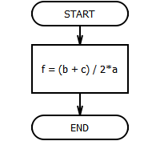

Присваивание - выполнение различных арифметических и логических операций, при которых указанные переменные принимают указанные значения.
Переменная величина получает конкретное значение только в результате присваивания. Присваивание может осуществляться двумя способами: с помощью команды присваивания и с помощью команды ввода.
Операция присваивания хотя и выделена в отдельный блок в AFCE для удобства, тем не менее она относится к блоку процесса и обозначается на блок-схеме как блок процесса.
Формат команды присваивания следующий:
переменная:=выражение
Знак ":=" нужно читать как "присвоить".
На блок-схемах можно писать математический знак равенства "=" вместо ":=".
Команда присваивания обозначает следующие действия, выполняемые компьютером:
1. Вычисляется выражение.
2. Переменная принимает полученное значение.
Выполнение присваивания (иллюстрация из программы):
